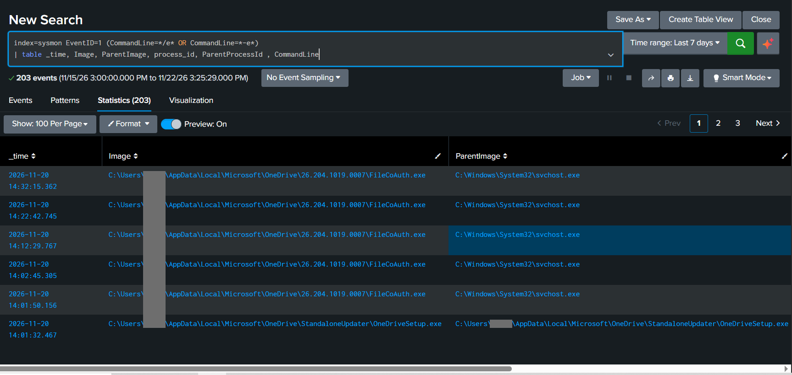
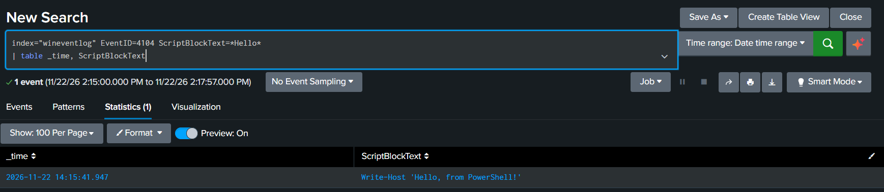
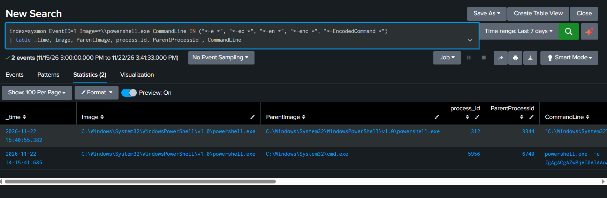

02 · Şifrelenmiş PowerShell
powershell.exe'nin Base64 ile kodlanmış bir komutla (-EncodedCommand ve kısaltmaları) başlatılması.
Saldırı
Invoke-AtomicTest T1059.001 -TestNumbers 17
# Tekrar testi, farklı yazılış
powershell.exe -enc VwByAGkAdABlAC0ASABvAHMAdAAgACcAdABlAGsAcgBhAHIAIAB0AGUAcwB0AGkAJwA=Tespit (SPL)
İlk geniş arama (203 olay)
index=sysmon EventID=1 (CommandLine=*/e* OR CommandLine=*-e*)
| table _time, Image, ParentImage, process_id, ParentProcessId, CommandLineSon sürüm (1 olay)
index=sysmon EventID=1 Image=*\\powershell.exe CommandLine IN ("*-e *", "*-ec *", "*-en *", "*-enc *", "*-EncodedCommand *")
| table _time, Image, ParentImage, process_id, ParentProcessId, CommandLine4104 ile çözülmüş içerik
index="wineventlog" EventID=4104 ScriptBlockText=*Hello*
| table _time, ScriptBlockTextFalse positive'ler ve ayıklama
İlk sorgum (CommandLine=*-e*) son 7 günde 203 olay getirdi. Önce sorguyu yanlış yazdığımı sandım. Sonra sorgunun doğru çalıştığını, yalnızca fazla geniş olduğunu fark ettim. Gelenlerin çoğu OneDrive'ın FileCoAuth.exe programı ve -e ile başlayan başka parametrelerdi. Aramayı yalnızca powershell.exe ile sınırlayınca 11 olay kaldı. Ama aralarında -e hiç geçmeyen olaylar da vardı: kendi PowerShell pencerem ve Windows telemetrisinin (CompatTelRunner.exe) çalıştırdığı betikler.
Düzeltmeler
Bu 11 olayın sebebi tırnaktı. Değerler tırnaksızken *-e * boşluktan ikiye bölünüyor, tek başına kalan * de her şeyle eşleşiyordu. Değerleri çift tırnağa alınca sonuç 1 olaya indi: yalnızca test. Bunu fark ettiğimde baya rahatladım, çünkü bu küçük ayrıntı yüzünden yanlış kararlar alabilirdim. Parametreden sonra bir boşluk da bıraktım ki -ExecutionPolicy gibi -e ile başlayan başka parametreler eşleşmesin.
Ekran görüntüleri

cmd.exe /c powershell.exe -e <Base64>.
FileCoAuth.exe ve -e ile başlayan her parametre.
iex adı 'ie{0}' -f 'x' ile gizlenmiş.

-e) ve tekrar testi (-enc) yakalandı, başka olay yok.Test kanıtı
| Test | Zaman (VM saati) | Sonuç |
|---|---|---|
T1059.001-17 (-e) | 2026-11-22 14:15:41.685 | Yakalandı (PID 5956) |
Elle -enc | 2026-11-22 15:40:55.382 | Yakalandı (PID 312) |
Çıkarılan ders
Komut satırında yalnızca Base64 görünüyordu. 4104 ise komutu her katmanda ayrı kaydetti ve son katmanda düz metin olarak Write-Host 'Hello, from PowerShell!' vardı. Bu düz metin olmasaydı sorguda aramakta cidden zorlanırdım.
Asıl dersim: sorguyu, saldırganın aynı komutu yazabileceği bütün yolları düşünerek yazmak. -e, -ec, -en, -enc ve -EncodedCommand listede var. Ama /e, -enco gibi yazılışlar ve PowerShell 7 (pwsh.exe) hâlâ dışarıda.
Tüm ayrıntılar (veri kaynakları, sınırlamalar, analistin sonraki adımları): detections/02-sifreli-powershell.md